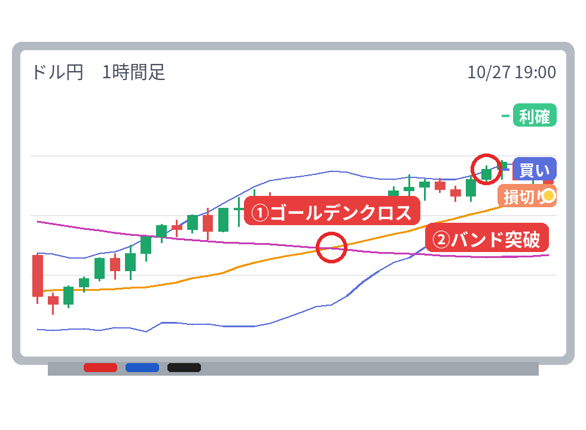

【カワセ】ドル円 買い → 損切り -2,146円（2026/10/27）

「ランチのあとにチャートチェック！」
カワセ（担当：本命（2R利確））が、10月27日 16時ごろにドル円を買い。結果は損切り・-2,146円（1万通貨の目安）でした。
今回のトレード
| 通貨 | ドル円 |
|---|---|
| 方向 | 買い |
| エントリー | 10/27 16:00 157.805円 |
| 最初の損切り | 157.592円 |
| 利確 | 158.230円 |
| 決済 | 10/27 20:00ごろ 157.592円（損切り） |
| 保有時間 | 約4時間 |
| 成績 | -1.01R（リスク1回分を1とした成績） |
| 損益の目安 | -2,146円（1万通貨） |
なぜ入った？ 戦法「クロス×ボリンジャー」
ボリンジャーバンドがギュッと細くなったあとに外へ飛び出す「バンド突破」と、25本の平均線が75本の平均線を抜ける「ゴールデンクロス（売りはデッドクロス）」。この2つのサインが24本以内に同じ向きでそろったら入ります。損切りは値動きの平均（ATR）の1.5倍、利確はその2倍の位置。
今回のチャートでは「①ゴールデンクロス、②バンド突破」のサインが出ています（下の図の丸印）。

結果
決めておいた損切りの位置に届いて決済しました。損を小さく止めるのもルールのうちです。
「ルールどおりの損切り。」
「明日もルールどおりにいくよ」
「明日もルールどおりにいくよ」